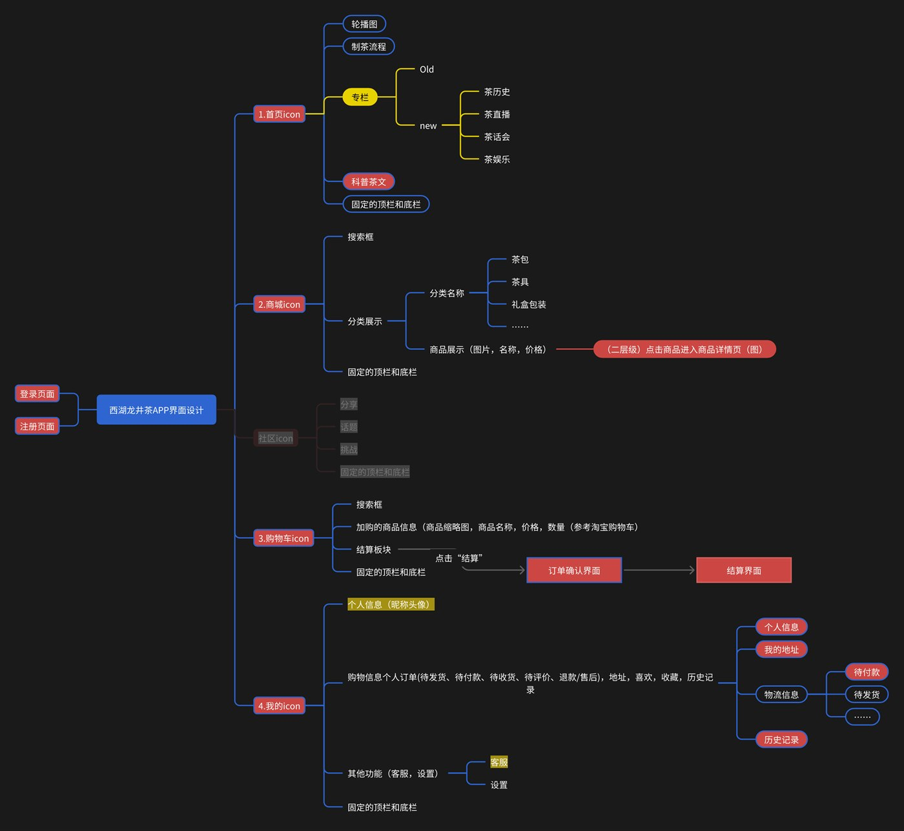
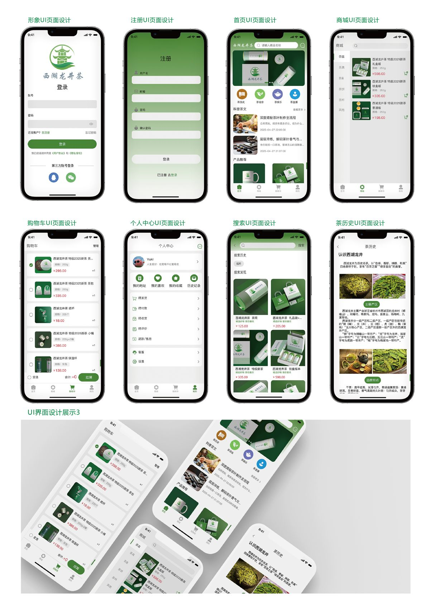

西湖龙井茶 APP 同时包含茶文化内容、商品购买与个人账户。如果一开始直接堆叠界面，很容易让功能之间失去关系。现有作品先用功能树划分主路径，再将它们落实为移动端页面，这也是这组作品最值得保留的部分。
先确定四条主路径
信息架构将产品分为首页、商城、购物车和个人中心。首页承担内容发现与文化入口，商城负责分类和商品详情，购物车承接结算流程，个人中心集中地址、订单状态、收藏和历史记录。

让内容和交易共享一套语言
茶历史、茶百科、茶话会、直播与文章阅读属于内容模块；商品分类、详情、购物车、订单确认和支付属于交易模块。界面使用一致的绿色、米白色、圆角容器和线面图标，把两类体验放进同一个品牌系统。

用页面连续性检查完整度
单张界面只能说明局部风格，连续页面才能暴露体验缺口。现有稿件覆盖登录注册、搜索、商品浏览、购物车、订单、地址、社区和个人中心，能够检查用户从发现内容到完成购买的大部分关键节点。
作品整理的重点不是把页面放得更多，而是让读者看清页面为什么存在、彼此如何连接。
下一步还需要补什么
- 补充项目周期、使用软件和个人分工。
- 说明信息架构形成时参考了哪些用户任务或竞品。
- 加入关键页面的交互原型，而不仅是静态界面。
- 如果进行过测试，记录问题、修改前后与验证结果。
作品页先保留现在能够清楚说明的过程；新的调研、原型与测试结果，会在完成后继续补进来。